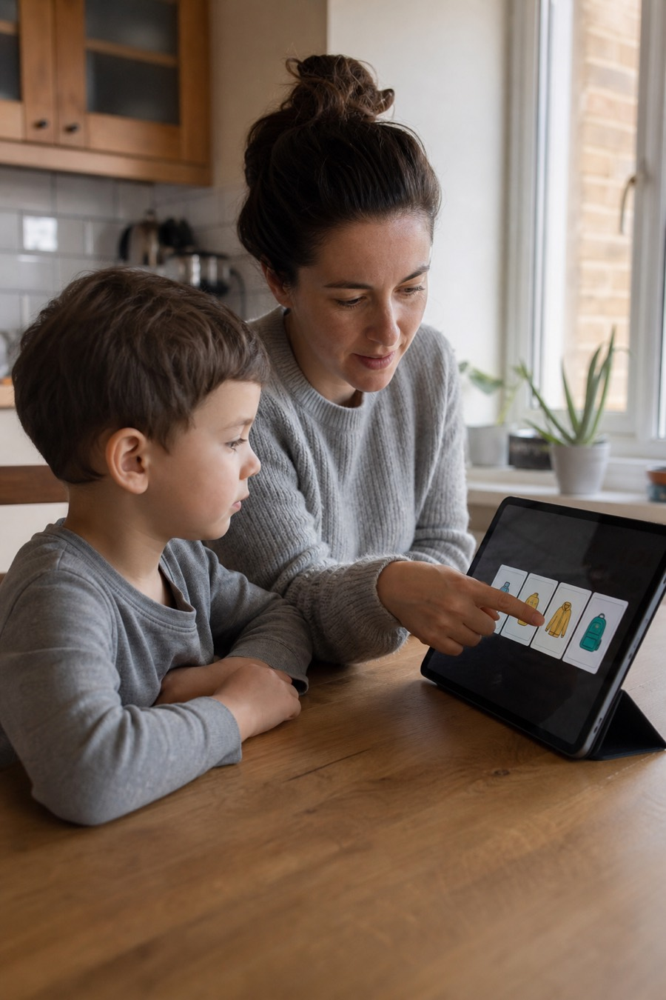
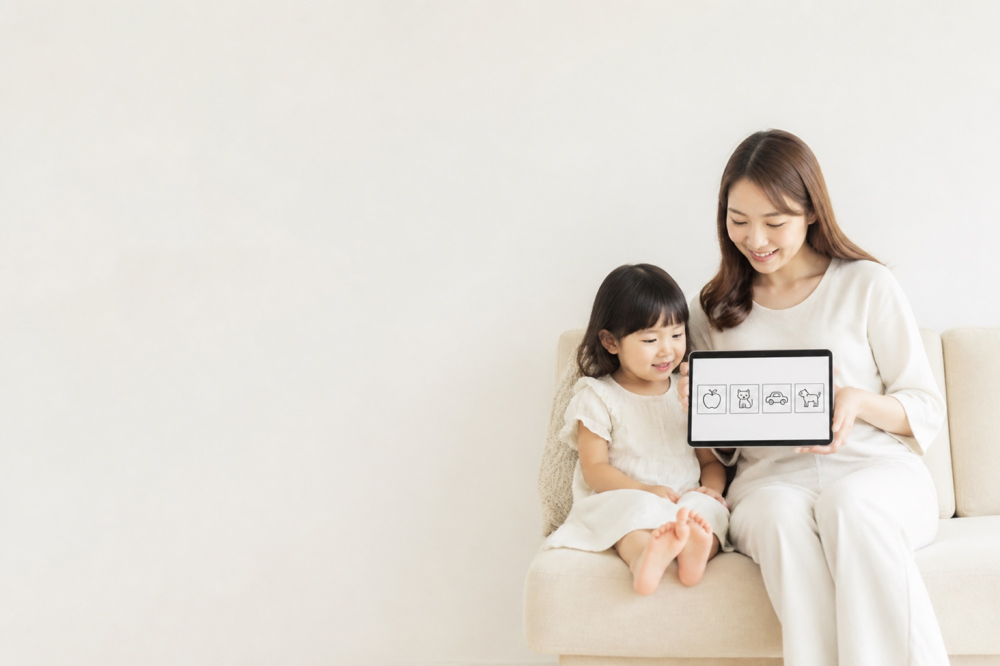
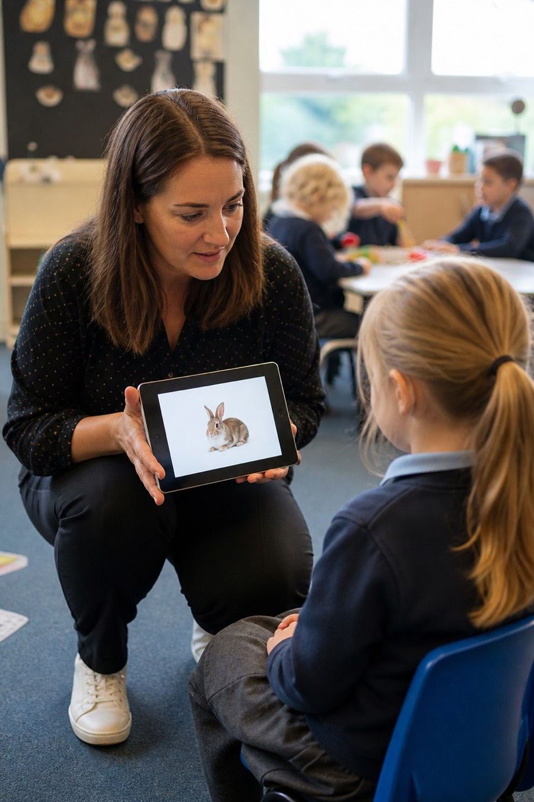

Family
One or two learners, everyday routines, and short First & Then boards when a transition needs calm.
See Family planPreview only
Same finalised copy. Different representation. Hero + Memberships stay as they are.
Option B — Lifestyle
Personalisation
Add a photo and PixtoLearn turns it into their avatar — then places them inside the steps they practise.

Session modes
Watch eat move from a full mealtime schedule, to Focus, to First & Then.
 Schedule
In the mealtime row
Focus
One step only
First & Then
Eat → drink
Schedule
In the mealtime row
Focus
One step only
First & Then
Eat → drink
Who it’s for
Two plans, shaped by how you teach — not two different products.

At home
One or two learners, everyday routines, and short First & Then boards when a transition needs calm.
See Family plan
In centres
Several learners, staff seats, and a Planner that keeps each person’s schedule separate.
See Pro planOption C — Radical cut
The app in one breath
Add a photo and it becomes their avatar in the steps. Then the same card — here, eat — runs as a schedule, Focus, or First & Then.
Who it’s for
Two plans, shaped by how you teach — not two different products.
One or two learners, everyday routines, and short First & Then boards when a transition needs calm.
See Family planSeveral learners, staff seats, and a Planner that keeps each person’s schedule separate.
See Pro planWhich one — B, C, or a blend?